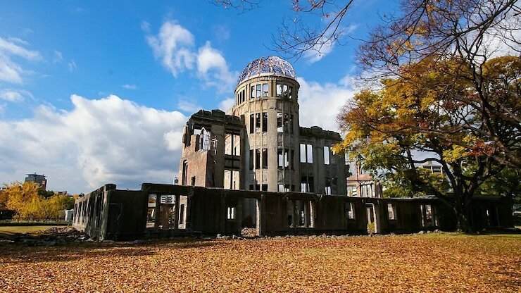

Peace Memorial Park
平和記念公園

Hiroshima's Peace Memorial Park (平和記念公園, Heiwa Kinen Kōen) is one of the most prominent features of the city. Even visitors not looking for it will likely stumble upon the large park of over 120,000 square meters. Its trees, lawns, and walking paths are in stark contrast to the surrounding downtown area.
Before the bomb, the area of what is now the Peace Park was the political and commercial heart of the city. For this reason, it was chosen as the pilot's target. Four years to the day after the bomb was dropped, it was decided that the area would not be redeveloped but instead devoted to peace memorial facilities
The park's main facility is the Peace Memorial Museum. Consisting of two buildings, the museum surveys the history of Hiroshima and the advent of the nuclear bomb. Its main focus though is on the events of August 6: the dropping of the bomb and its outcome in human suffering. The personal details displayed are quite upsetting and serve to remind that we should not take peace for granted.
The A-Bomb Dome, also known as the Hiroshima Peace Memorial, is what remains of the former Prefectural Industrial Promotion Hall. The building served as a location to promote Hiroshima's industries. When the bomb exploded, it was one of the few buildings to remain standing, and remains so today. A UNESCO World Heritage Site, the A-Bomb Dome is a tangible link to Hiroshima's unique past.
Between the Museum and the A-Bomb Dome is the Cenotaph for the A-Bomb Victims. The Cenotaph is an arched tomb for those who died because of the bomb, either because of the initial blast or exposure to radiation. Below the arch is a stone chest holding a register of these names, of which there are over 220,000.
Every year on the anniversary of the bomb, a ceremony is held at the park. Speeches are made, wreathes are laid at the Cenotaph, and a moment of silence is observed at 8:15 am, the precise moment of detonation. Other activities occur throughout the day, and many staff are employed to help foreign visitors.